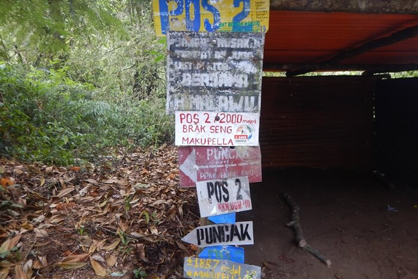
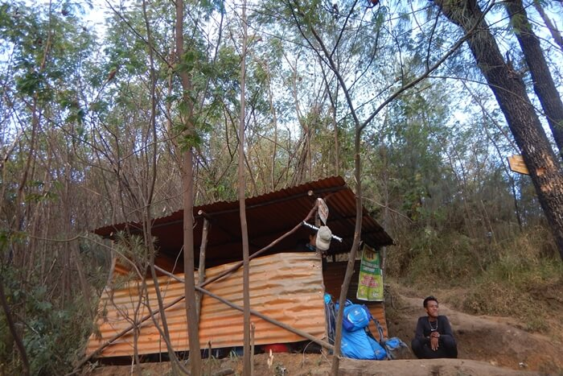
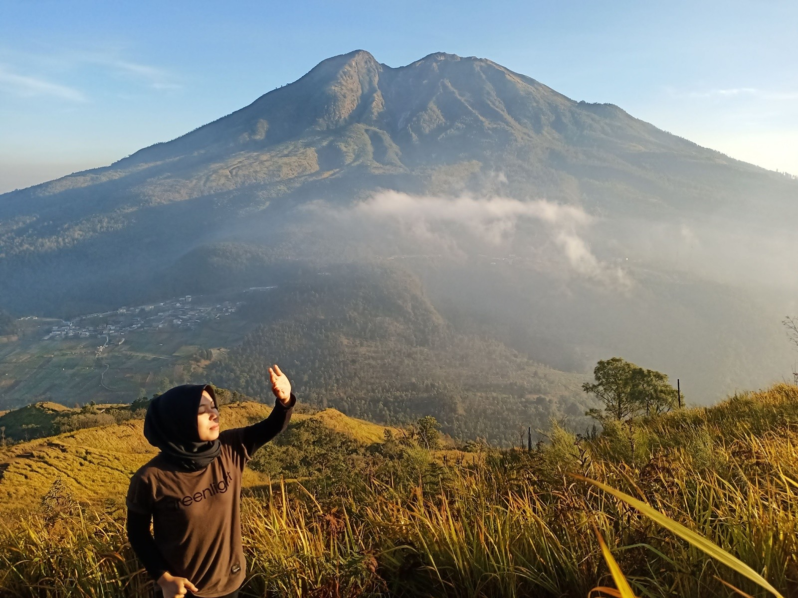
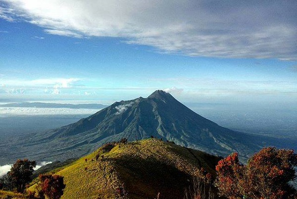

FIND ME ON :


Gunung Lawu, 3.265 mdpl, berada di perbatasan Jawa Tengah (Karanganyar) dan wilayah Jawa Timur (Magetan). Gunung Lawu adalah salah satu gunung favorit para pendaki karena keindahan jalurnya—sabana—dan cerita-cerita (mistis) yang berkembang tentangnya. Menuju titik awal pendakian Gunung Lawu bisa menggunakan bis antarprovinsi atau kereta dengan waktu tempuh kurang lebih 10 jam.
Awal September 2016 yang lalu saya bersama sepuluh teman merealisasikan pendakian ke Gunung Lawu. Perjalanan kali ini sangat menyenangkan, sebab banyak yang seru untuk diceritakan.
Jadi, sepulang kerja saya langsung menuju Stasiun Pasar Minggu, transit untuk ke Kemayoran. Karena nggak dapat tiket kereta buat berangkat—kami cuma punya tiket pulang—kami memutuskan untuk naik bis malam Damri yang pool-nya berada di Kemayoran, yang juga sekalian dijadikan meeting point.
Ceritanya saya diajak oleh seorang teman, Adam Arwi namanya. Saya baru mengenal teman-teman lainnya saat di Damri Kemayoran. Bang Irwan yang dipilih sebagai leader. Bersama Bang Irwan, Bang Deno Saputra, Fimansyah, Adam Arwi, Bang Heru, dan Jane Jana, saya berangkat dari Jakarta untuk bertemu teman-teman pendaki yang sudah menunggu di Terminal Tirtonadi, Solo.
Karena long weekend, jumlah penumpang melonjak pesat. Dan salahnya, kami nggak beli tiket bis beberapa hari sebelumnya. Teman laki-laki ke sana kemari mencari tiket, sementara saya dan Jane menjaga tas sambil bertukar cerita.
Beberapa saat kemudian mereka kembali dengan wajah muram lantaran kehabisan tiket bis. Karena saat itu perut keroncongan, kami mengisi perut dulu sambil memikirkan cara buat berangkat ke Solo. Sedang asyik makan pecel lele di samping pool Damri sambil ngobrol soal keberangkatan, ada seorang bapak-bapak berambut gondrong dan bertubuh tinggi ikut nimbrung. Dan dia menawarkan untuk mengangkut kami dengan mobilnya. Kebetulan ia hendak menuju Solo juga bersama istrinya.
Perjalanan nggak semulus yang kami pikir
Setelah deal-dealan ongkos, kenalah kami ongkos getok: Rp 180 ribu orang. Berangkatlah kami ke Solo dengan mobil sedan milik bapak gondrong itu. Walaupun berdempetan di dalam mobil, kami nggak peduli. “Ah, elah. Yang penting sampai,” pikir kami.
Perjalanan nggak semulus yang kami pikir: salah masuk tol, ban gembos di Tol Cipali, akhirnya keluar dari tol entah di desa dan daerah mana yang sepi dan gelap, kanan kiri hutan yang sangat minim penerangan, dan—entah kenapa—lampu depan mobil mati dan kami meraba jalan dengan bantuan pantulan lampu dari kendaraan lain (kalau ada kendaraan yang lewat berarti aman, kalau nggak ya gelap-gelapan dan kami semua cuma bisa komat-kamit saja memanjatkan doa supaya jangan sampai masuk jurang). Untungnya, akhirnya kami menemukan bengkel yang hampir tutup. Bapak montir yang baik hati mau menolong kami untuk isi freon AC, mengganti lampu depan mobil, dan memeriksa ban. Ketika akhirnya kami meneruskan perjalanan, bapak gondrong lupa arah masuk pintu tol!
Sebelnya naik mobil pribadi ya seperti ini: waktu tiba semaunya. Alhasil jam 8 pagi barulah akhirnya kami tiba di wilayah Solo.
Dengan sok tahu kami minta diantar ke terminal kecil yang kami kira sebagai terminal bus. Kenyataannya, terminal itu hanya terminal bayangan saja tempat angkutan desa dan bis tiga per empat lalu-lalang mencari penumpang. Setelah bertanya sana-sini, barulah kami tahu bahwa ternyata Terminal Tirtonadi masih jauh. Masih harus naik bis tiga per empat 30 menit lamanya. Rasanya saat itu ingin nangis: Kok ada saja hambatannya?
Kami pun naik bis menuju Terminal Tirtonadi dengan ongkos Rp 5000 per orang. Alhamdulillah, akhirnya tiba di Terminal Tirtonadi jam 11 siang. Di sana sudah ada dua orang yang menunggu, yakni Kak Tanty dan Mas Pram dari Semarang.
Keganjilan mulai muncul
Setelah tukar cerita soal perjalanan, dan mengisi perut tentunya, kami langsung menuju jalur pendakian Gunung Lawu via Candi Cetho. Perjalanan ditempuh sekitar 2 jam. Pemandangannya indah. Kebun teh terhampar di kanan-kiri jalan, ada bukit-bukit yang tinggi menjulang, pohon-pohon pinus kokoh berdiri di pinggir jalan. Saat melintasi jalur ini, jangan lupa buat membuka kaca mobil. Udara segarnya sayang untuk dilewatkan begitu saja. Pokoknya, yang awalnya mengantuk pasti bakal melek terus begitu melihat pemandangan epic ini.
Kami pun tiba di rumah pemilik mobil yang menjemput kami di Solo. Letaknya di kaki Gunung Lawu, dekat sekali dengan Candi Cetho. Pemandangan di depan rumahnya …. jangan ditanya: “Masyaallah, dah! Indah bener!”
Di base camp pendakian Candi Cetho, pendaftaran diurus oleh leader kami, Bang Irwan. Sementara ia mengurus simaksi, perizinan, dan di-briefing, kami hanya menunggu sambil selfie.
Setelah kelar urus-mengurus, kami berdoa kemudian mulai mendaki. Waktu itu sekitar jam 5 sore. Kami mendapatkan dua teman baru dari Semarang, yaitu Mas Mencen dan Mas Gondrong. Jadilah kami bersebelas mendaki bersama.
Saat itu cuaca sangat bersahabat. Burung-burung hutan dan jalak berbunyi menyapa dan mengikuti kami. Selain Candi Cetho, ternyata ada sebuah candi lagi di jalur pendakian yang cukup ramai oleh wisatawan. Namanya Candi Kethek.
Sekitar 30 menit dari Candi Kethek, kami tiba di Pos 1. Karena saat itu magrib, kami berhenti sejenak sebelum melanjutkan perjalanan ke Pos 2 untuk salat magrib sekaligus istirahat menunggu isya. Dari Pos 1 ke Pos 2 perlu sekitar 45 menit. Akhirnya kami meng-qada salat magrib dengan isya. Nah, dari sinilah kejadian ganjil muncul.
Jujur, saat selesai salat beberapa dari kami—termasuk saya—buang air kecil di belakang, yang jaraknya lumayan dari Pos II. Saat itu kami nggak merasakan apa pun. Seperti sebelum-sebelumnya, kami juga sopan santun jika hendak buang air kecil. Kami permisi dan mengucapkan salam dan rasa terima kasih.
Melewati Pos 2, perasaan masih biasa saja. Belum ada keganjilan sama sekali. Sampai akhirnya setelah 10 menit meninggalkan Pos 2 Bang Deno terhentak. Ia seperti kaget dan berhenti. Tapi dia nggak bercerita apa pun dan cuma lanjut berjalan.
Kaki saya waktu itu terasa berat sekali. Susah sekali untuk digerakkan. Saya masih berpikiran positif untuk nggak memikirkan hal lain. Sepanjang perjalanan saya melihat makhluk gaib seliweran. Banyak yang saya lihat. Namun—lagi-lagi—saya mencoba berpikir positif saja.
Teman-teman mengira saya kena hipotermia
Setengah perjalanan, saya terus muntah-muntah. Akhirnya saya terjatuh. Saya dipapah untuk berjalan sebentar sampai Pos 3 yang tak jauh dari lokasi saya jatuh. Di Pos 3, teman-teman istirahat dan saya meluruskan tubuh saya sejenak, lalu …. saya nggak ingat apa pun lagi.
Namun, menurut cerita semua teman-teman pendakian, saya kemudian tertidur. Saat teman-teman sudah selesai masak mie instan, Adam mencoba membangunkan saya. Tapi saya nggak bangun-bangun sampai akhirnya teman-teman semua panik—setengah tubuh saya sudah dingin sekali.
Saat itu teman-teman mengira saya kena hipotermia. Lalu Kak Tanty dan Jane Jana mengganti pakaian saya, membungkus saya dengan sleeping bag, sarung, dan memeluk saya sambil membangunkan saya berulang kali. Namun saya sama sekali nggak bereaksi. Menurut cerita teman-teman, napas saya hilang timbul dan tipis sekali. Badan saya juga sudah dingin dan wajah pucat sekali.
Teman-teman sangat takut saya kenapa-kenapa. Kak Tanty dan Jane Jana pun menangis membangunkan saya. Teman-teman ada yang membacakan Surat Yasin sambil terus berusaha membangunkan saya, sampai akhirnya Bang Deno memegang dan memeluk saya. Karena dia juga tahu hal-hal gaib, dia bilang ke temen-temen kalau ada yang mengikuti saya.
Bang Deno terus mencoba membangunkan saya, namun saya nggak bereaksi. Beberapa kali juga dia memberikan napas buatan namun tak ada reaksi juga. Akhirnya, entah apa yang dilakukan oleh Bang Deno, saya pun tersadar dan muntah berkali-kali. Saya pun kaget dan heran melihat teman-teman yang menangis dan tertawa lega melihat saya bangun. Saya cuma bisa melongo karena nggak ingat apa pun.
Tapi, yang saya tahu, tadi saya mimpi bertemu tiga orang pendaki. Seorang laki-laki dan dua perempuan yang salah satunya berkerudung. Yang saya ingat, si laki-laki ini mau minta tolong kepada saya, sementara si perempuan berjilbab meminta saya mendengarkan ceritanya. Perempuan satu lagi hanya tersenyum-senyum dan berulang kali terbahak-bahak.
Saat saya siuman, tak seorang pun teman yang mau bercerita. Kalau saya bertanya—“Pada kenapa, sih? Ada apaan?”—mereka hanya senyum-senyum tapi bungkam.
Karena sudah jam 11.30 malam, kami memilih untuk kemah di Pos 3 saja dan menunda pendakian sampai esok pagi. Saat itu saya juga masih heran: mereka menjaga saya seperti menjaga seorang narapidana. Saya satu tenda dengan Adam, Kak Tanty, dan Bang Irwan. Walaupun mata belum mengantuk, mereka semua meminta saya untuk tidur.
Berjumpa “sesuatu” dalam perjalanan menuju Pos 4
Pagi harinya kami bangun jam 7 pagi. Setelah sarapan dan siap-siap, kami mulai berjalan ke puncak. Sebelum perjalanan dimulai, berulang kali saya dipastikan sehat oleh teman-teman. Dan saya memang merasa nggak kenapa-kenapa. Saya nggak sakit—apa yang harus dikhawatirkan?
Pendakian menuju puncak pun dimulai. Tentunya ditemani segarnya udara dan kicauan burung—entah itu burung apa. Nah, saat menuju Pos 4 yang tanjakannya super curam—kanan-kiri pepohonan tandus seperti habis terbakar—ketika saya mendongak hendak memegang akar pohon, saya kaget sekaget-kagetnya melihat tiga wajah orang dalam keadaan mengelupas dan hancur seperti orang kecelakaan.
Saya jatuh dan spontan menangis ketakutan, nggak mau meneruskan perjalanan ke atas. Adam mengalah. Dia ikut turun menemani saya, sementara yang lainnya tetap kekeuh menuju puncak. Kami berpisah di Pos 4. Sebenarnya saya sendiri pun nggak masalah turun sendiri. Tapi Adam terlalu khawatir sama saya sehingga ikut turun. Sepanjang perjalanan turun, Adam tak henti berbicara dan melucu. Katanya, sih, biar pikiran saya nggak kosong.
Tibalah di Base Camp Reco (Relawan Ceto) dan bertemu dengan Pakde Anggoro dan Mas Kris. Pakde Anggoro yang menyambut saya di base camp. Ia seperti sudah tahu apa yang saya alami.
Ia tersenyum saja. “Piye, Nduk? Sehat?” ia bertanya. Saya yang kelelahan hanya membalas senyumnya sambil bilang saya gagal sampai puncak. Ia hanya tersenyum lalu merangkul saya untuk bercerita.
Tapi Adam yang lebih dulu bercerita. Kemudian barulah Pakde Anggoro bertanya apa yang saya ingat. Saya ceritakan tentang ketiga pendaki yang saya “temui” itu—tiba-tiba saya spontan menyebut nama “Kartini.”
Cerita tentang kebakaran dahsyat di Lawu
Ternyata, menurut cerita Pakde Anggoro, dulu terjadi bencana yang sangat menyeramkan, yaitu kebakaran Gunung Lawu di Jalur Cemoro Sewu dan Cetho. Hanya saja bagian Cetho cuma kena sedikit, yakni di sekitar Pos 4.
Menurut ceritanya, yang wafat ada sembilan orang lebih. Ada empat korban kebakaran yang sangat susah untuk diidentifikasi jasadnya. Pakde Anggoro bercerita mereka memang biasa menampakkan wujudnya untuk mengajak pendaki interaksi atau sekadar muncul saja. Banyak yang nggak kuat, sampai kesurupan, drop, sakit, bahkan ada wanita asal Tegalrejo yang kesurupan dari atas sampai base camp lalu karena nggak kuat akhirnya meninggal.
Saya pribadi nggak tahu sedikit pun tentang Tragedi Lawu. Yang saya pernah baca cuma soal si Nenek-Minta-Gendong dan Pasar Setan yang mengharuskan kita untuk melempar duit berapa pun jumlahnya kalau ada suara berbunyi “Tumbas opo?” (“Beli apa?”) di tengah alunan gamelan dan riuh-rendah seperti di pasar.
Ternyata masih banyak misteri Lawu yang belum banyak diceritakan. Beliau hanya geleng-geleng kepala saja. Akhirnya dia memancing “penglihatan” saya untuk menerawang apa yang ada di daerah Bulak Peperangan dan Pasar Dieng. Dengan gamblang saya menceritakan apa yang saya lihat saat itu—dan dibenarkan oleh Pakde Anggoro.
Karena semakin penasaran, dia pun bertanya tentang bangunan di dekat base camp. Lagi-lagi saya menceritakan apa yang saya lihat.
“Kepiye to wis dikandani ra dirungokke,” kata Pakde Anggoro. Ternyata menurut si Pakde, kemarin sebelum kami mendaki, saat briefing Pakde sudah memperingatkan sebaiknya jangan nanjak dengan jumlah ganjil. Dia juga memastikan apakah kami yakin mau mendaki jam 5 sore, kenapa nggak pagi atau siang, atau malam sekalian.
Sebenarnya kalau dipikir benar juga, sih. Karena mulai nanjak nanjak jam 5 sore, kita akan bertemu dua waktu salat yang sangat singkat, yaitu magrib dan isya. Jam-jam segitu memang waktu turunnya sandekala (setan)—menjelang maghrib.
Akhirnya Pakde meminta saya untuk mandi di sendang di Puri Saraswati. Namun saya menolak. Akhirnya saya hanya cuci muka, cuci tangan, dan cuci kaki.
Setiba di depan pintu sendang, saya melihat sesosok perempuan cantik, namun terlihat galak dan bertubuh seperti ular. Saya kaget. Lalu Pakde bertanya, “Melihat apa?” Saya bilang bahwa saya melihat wanita itu. Lalu, seraya menunduk dan menelungkupkan tangannya, dia hanya berkata kepada saya, ”Jangan takut. Ayo masuk bersihkan badanmu.” Saya menurut saja lalu saya cuci muka, kaki, dan tangan. Masing-masing tiga kali. Setelah itu saya melemparkan uang koin seikhlasnya ke dalam kolam sambil berharap yang terbaik.
Percaya atau tidak, setelah itu saya merasa badan saya yang sebelumnya nggak karuan menjadi jauh lebih tenang—dan enteng. Seperti apa, ya, rasanya? Plong saja, begitu. Ya, terserah, sih, mau percaya atau tidak. Kalau nggak ada ibu itu, barangkali kami jalan kaki sampai Terminal Karang Pandan
Setelah tak kunjung menerima kabar apakah teman-teman yang lain sudah tiba di puncak dan mau bagaimana, akhirnya saya dan Adam pamit untuk pulang kembali ke Jakarta. Pasti teman-teman nggak dapat sinyal.
Akhirnya, karena sudah kesorean, nggak ada angkutan menuju Terminal Karang Pandan. Mau nyewa mobil, harganya mahal sekali—Rp 600 ribu—dan uang kami sangat terbatas. Dengan keyakinan bahwa siapa tahu ada ojek atau mobil angkutan di bawah sana yang mau mengangkut kami, juga karena waktu itu masih terang, kami turun jalan kaki.
Pemandangannya indah sekali. Tapi ternyata jauh juga jalan kakinya. Lama-lama semakin sepi. Kendaraan yang lewat pun semakin sedikit. Magrib hampir tiba tapi saya dan Adam masih saja berjalan kaki mencari tumpangan.
Yang namanya jalan pedesaan itu lebih menyeramkan, sebab kanan-kiri bukit, kebun teh, kebun sayur, pohon bambu, belum lagi ada suara-suara hewan malam yang kadang suka bikin rancu—benar suara hewan malam atau suara yang “lain.”
Semakin ditelusuri rasanya jalan semakin jauh dan panjang. Sesekali ada mobil lewat. Tapi sebelum kami minta tolong mereka sudah teriak duluan, “Maaf, ya. Mobil penuh.” Akhirnya, setelah kami jalan kaki sekitar tiga kilometer, sesudah beratus kali memasang tampang memelas setiap kali ada kendaraan yang lewat, sebuah mobil berhenti.
“Bade pundi, Nduk?” Tanya seorang ibu kepada saya. Untungnya saya masih bisa bahasa Jawa sedikit-sedikit. “Iki, Bu. Kulo bade teng Karang Pandan. Numpak bis semarangan,” jawab saya. “Hayuk tak anter. Sampeyan jalan kaki seko endi, Nduk?” sang ibu menawarkan tumpangan. “Candi Cetho, Bu. Kulo kesorean ra ono mobil opo ojek sing gelem nganterke mring Karang Pandan.” “Woalah melaske nemen,” sang ibu prihatin. “Angger ra ketemu kambi kulo sampeyan terus mlaku ya Nduk. Tekan subuh, loh.”
Alhamdulillah masih ada manusia baik yang punya hati nurani untuk menolong sesamanya. Berkat pertolongan sang ibu dan keluarganya, saya dan Adam bisa sampai di Terminal Karang Pandan jam 8 malam.
Diantar “preman” budiman sampai ke Solo
Tapi nasib baik nggak kunjung berpihak pada kami. Terminal Karang Pandan sudah sepi. Nggak ada satu pun bis antarkota yang masih parkir menunggu penumpang. Hanya ada beberapa penjual kacang rebus, jagung rebus, dan bakul rokok keliling yang selalu menawarkan dagangannya walaupun kami sudah bilang, “Mboten, Mas.”
Pikiran sudah buntu. Saat saya dan Adam sudah nggak tahu lagi harus naik apa ke Terminal Tirtonadi, tiba-tiba kami dihampiri tiga orang laki-laki. Dari mulut mereka menguar bau minuman keras. Saya pikir ketiga laki-laki itu hendak berbuat yang tidak-tidak. Namun kami salah.
Justru ketiganya menawarkan bantuan untuk mengantarkan kami ke Solo kota agar bisa mencari taksi atau bis lainnya ke Terminal Tirtonadi. Sepanjang perjalanan, karena masih dalam keadaan mabuk, mereka naik motor semaunya, “sengebutnya.” Kalau mereka mengajak ngobrol, bau mulut mereka sangat menyengat. Tapi, namanya butuh ya diantepin saja. Untungnya mas-masnya ini masih mau ditegur jika motor sudah kelewat kencang.
Tibalah kami di Solo kota. Kami berterima kasih sekali kepada mas-mas yang mengantarkan kami itu. Luar biasanya, tak ada seorang pun di antara mereka yang mau dibayar. Mereka ikhlas. Kami pun tukaran nomor ponsel. Suatu saat kalau saya ke Lawu lagi, saya pasti akan ajak mereka ngopi. Dari sana, gampang saja kami menemukan taksi.
Sudah lega. Tak terasa kami sudah berada dalam bis menuju Semarang. Tiba di Semarang jam 11 malam, kami mengisi perut dulu di sekitar Stasiun Tawang. Makanannya unik, yakni nasi goreng yang dimasak dengan arang. Lama sekali matangnya.
Setelah makan kami menunggu kereta di dalam stasiun. Kemudian kami mendapat kabar yang kurang baik dari teman-teman yang muncak Lawu. Mereka turun dari puncak lewat Cemoro Sewu. Jane Jana kakinya terkilir sampai harus digendong secara bergantian, bahkan oleh ranger. Dia juga sempat demam tinggi. Kak [T]anty sakit dan beberapa teman lainnya drop. Mereka terpaksa meng-cancel jadwal pulang mereka karena sudah sangat larut malam dan nggak akan keburu juga tiba di Semarang pada jadwal keberangkatan kereta, pukul 2 malam. Tiket pun hangus. Tapi, yang tereliminasi dari puncak Gunung Lawu hanya saya dan Adam.
Perjalanan mendaki kali ini tidak akan pernah saya lupakan. Semua cerita dan kisahnya akan selalu teringat, begitu pun janji kepada sang Lawu bahwa suatu saat nanti saya akan kembali bersilaturahmi, untuk bertemu Mbok Yem dan Hargo Dumilah.
Dan, percaya tidak percaya, saat saya tiba di Jakarta dan iseng mengecek Facebook, saya terhenyak mendapati bahwa ternyata saya sudah berteman dengan Alm. Aris Munandar, salah seorang korban kebakaran Gunung Lawu yang jenazahnya nggak bisa diidentifikasi selama 7 hari. Tak hanya berteman dengan almarhum, saya juga berteman dengan beberapa teman pendakiannya dari tahun 2010!
 Papandayan dan Pelajaran untuk Lebih Bijak Memilih Teman Pendakian
Gagal ke Puncak Lawu, Pulang Membawa Banyak “Cerita”
Papandayan dan Pelajaran untuk Lebih Bijak Memilih Teman Pendakian
Gagal ke Puncak Lawu, Pulang Membawa Banyak “Cerita”
 Inilah 7 Tumbuhan yang Bisa Dimakan di Gunung dan Hutan
Inilah 7 Tumbuhan yang Bisa Dimakan di Gunung dan Hutan